Unreal Engine 5 · Spatial Level Design
Mountain Citadel
A compact exploration level built to demonstrate how architecture can guide attention, movement and curiosity without relying on explicit objective markers.
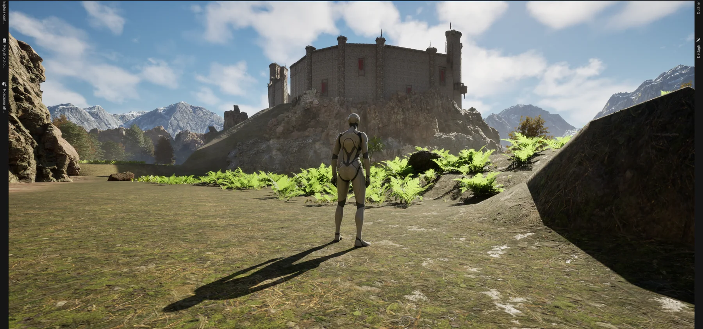
01
Design Intent
The level is organized around a single long-term visual objective: the castle. It remains readable from multiple parts of the space, acting both as the dominant landmark and as an architectural “weenie” that continuously re-orients the player.
Around that anchor, the route is broken into short-term goals, elevated prospects, partial reveals and optional reward spaces. The intention is to make exploration feel self-directed while still giving the player enough spatial information to understand where they are in relation to the final destination.
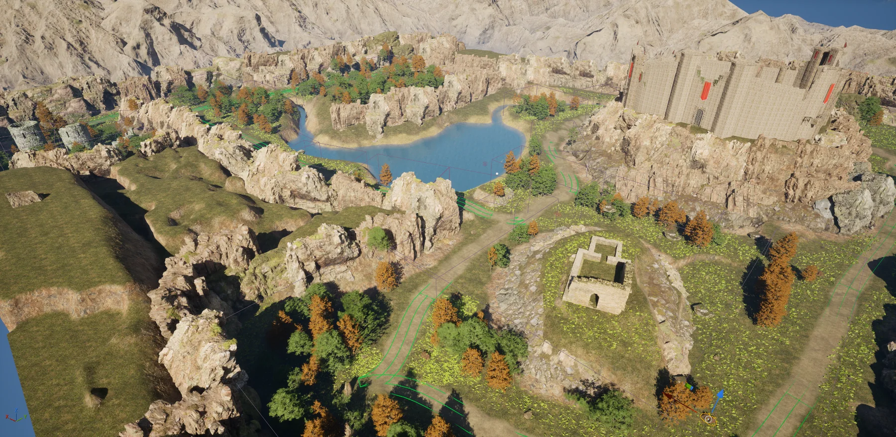
02
Compression → Prospect
The imagined arrival begins in a narrow, refuge-like approach and opens into a much larger prospect space. The spatial contrast is deliberate: compression limits information, while the open area suddenly exposes the player to a broad field of view and multiple possible routes.
The castle is revealed immediately at long range. This establishes the level’s long-term goal before the player has to make any local navigation decisions.
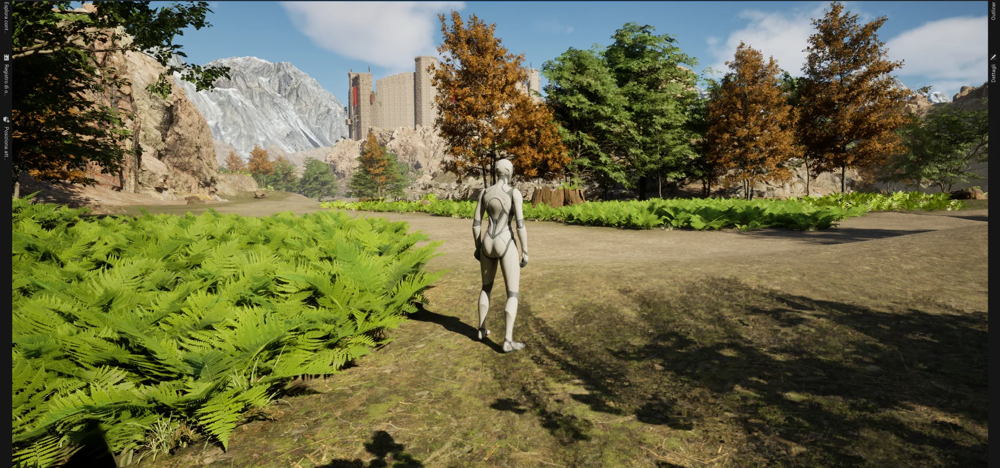
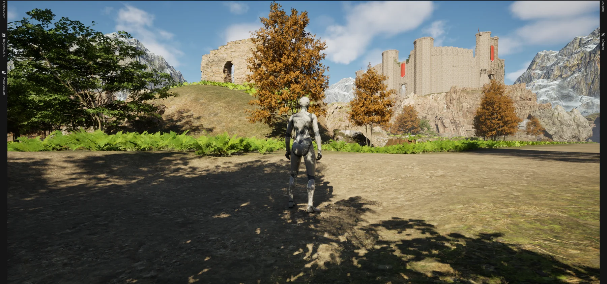
03
Short-Term Goal & Rewarding Vista
The hilltop ruin is placed close enough to feel attainable and visually distinct enough to attract the first detour. Reaching it rewards the player twice: first through a framed glimpse of the castle, then through elevation that exposes a larger portion of the route network.
The reward is therefore not only decorative. The vista also provides information: the player can read the lake route and the alternative paths wrapping around the castle.
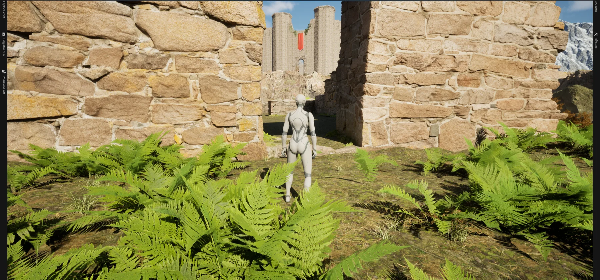
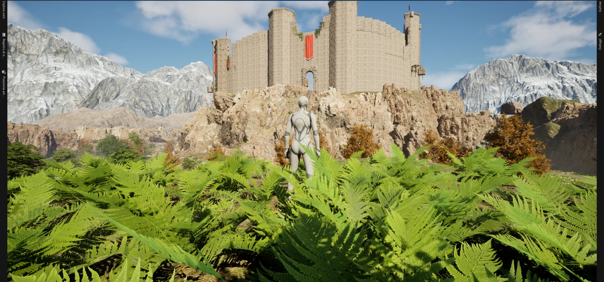
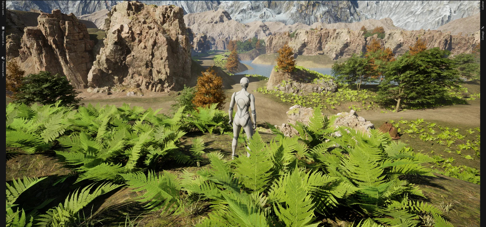
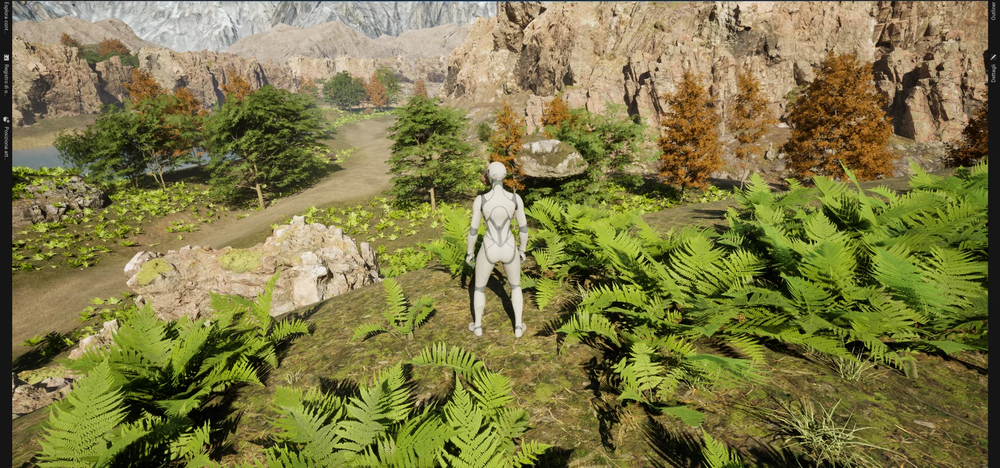
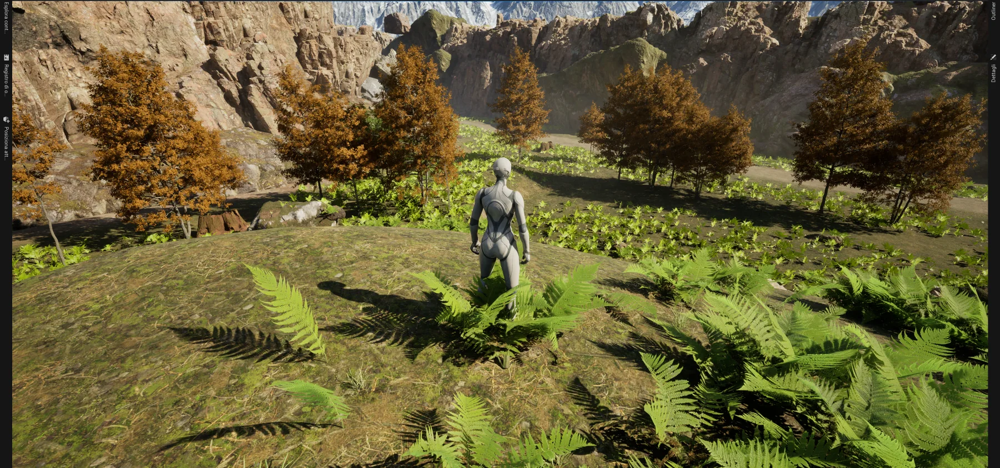
04
Curiosity Through Partial Information
The lake route is intentionally more guided. Its initial direction is easy to read, but the path periodically withholds information through rock formations, vegetation and angled turns. The player receives enough visual evidence to suspect that more space exists beyond the current view, but not enough to resolve it immediately.
This follows the logic of Totten’s Zen Views: reward anticipation by showing partial information and delaying complete access. Obtusely angled spaces are also used to hide parts of upcoming areas and sustain curiosity around corners.
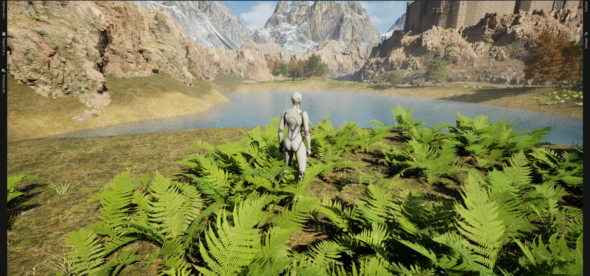
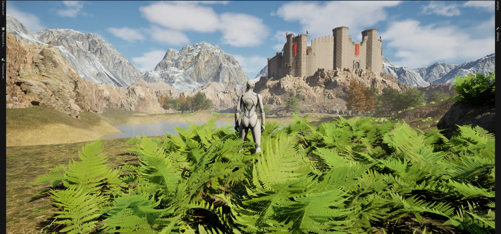
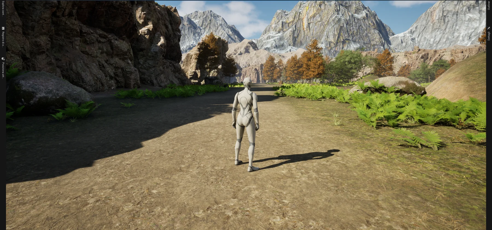
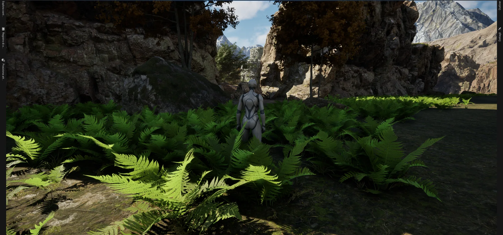
05
Optional Reward Space
The route eventually resolves into a choice. One branch leads toward a ruined clearing. Because this space is not required for reaching the castle, it can support optional rewards: environmental storytelling, narrative context, resources or gameplay utility.
The space gives curiosity a concrete payoff. Exploration is encouraged not by an objective marker, but by spatial denial followed by access.
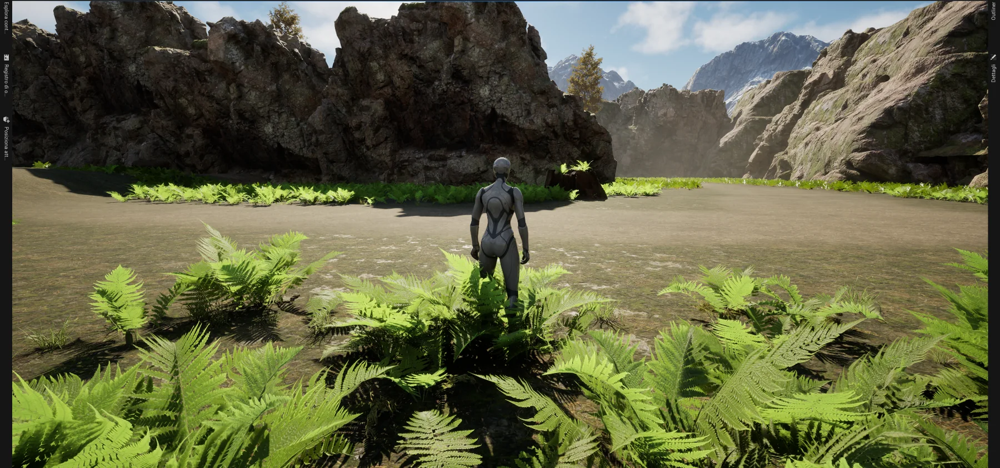
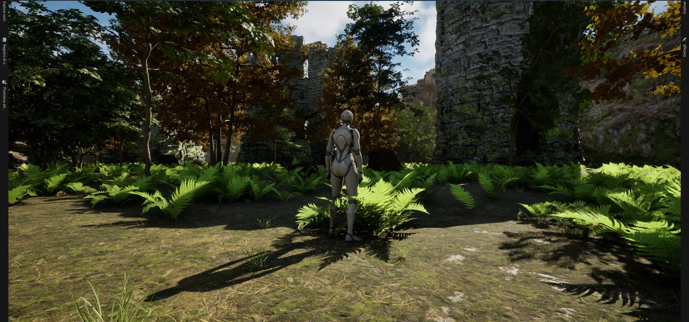
06
Reorientation & Return to the Landmark
After the optional detour, the route bends back toward the castle. The player does not need a map marker to understand this relationship: repeated glimpses and the castle’s scale preserve its position in spatial memory.
Curved paths and obtuse turns keep the next space partially hidden, allowing each transition to reveal information progressively instead of exposing the entire route at once.
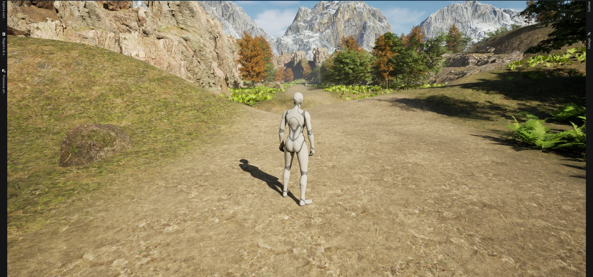
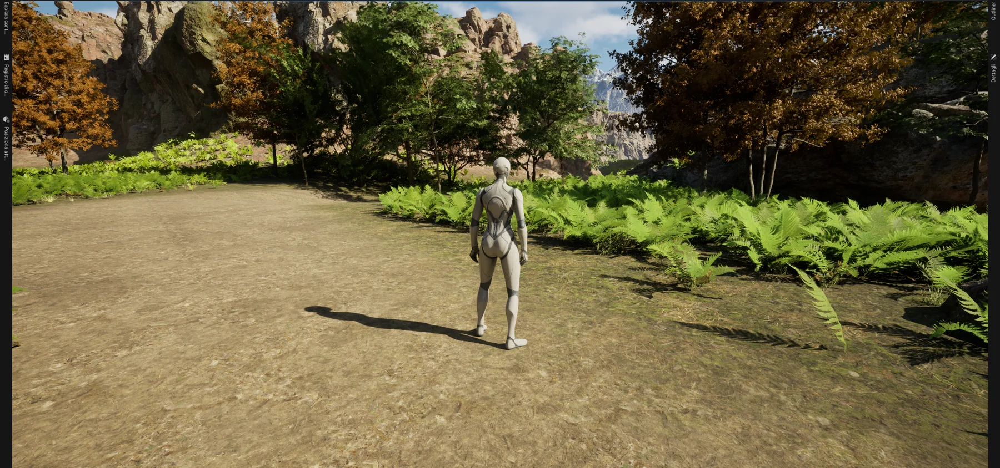
07
Final Compression & Castle Reveal
The final approach deliberately returns to compression. Rock walls create a narrow corridor that temporarily removes the castle from view and reduces the player’s awareness of the surrounding level.
Exiting this passage produces the final prospect reveal. The castle is now much closer and occupies far more of the visual field. The same landmark introduced at the beginning therefore changes function over the course of the level: first it promises a destination, then it re-orients exploration, and finally it confirms arrival.
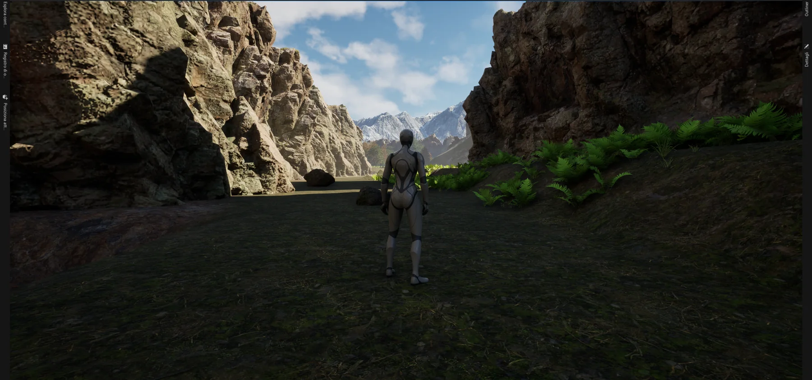
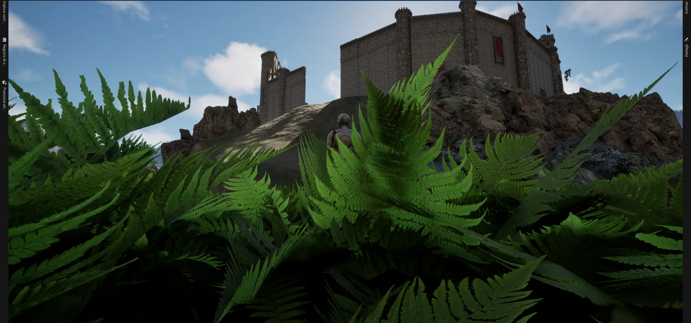
08
What This Study Demonstrates
- Using spatial contrast to control tension, visibility and pacing.
- Establishing a long-term landmark while scheduling smaller short-term goals.
- Rewarding exploration with vistas, information, optional narrative spaces and access.
- Using partial information, framing and obtuse turns to sustain curiosity.
- Maintaining orientation across a non-linear route network without explicit UI guidance.
- Using elevation and repeated sight lines to communicate route structure.
Design framework informed by Christopher W. Totten, An Architectural Approach to Level Design, Second Edition.